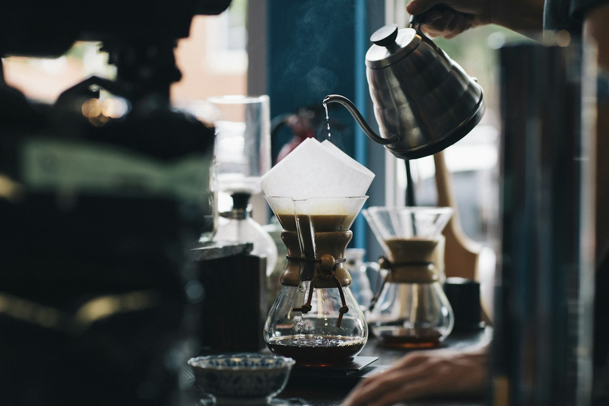

01
Uma barbearia ou salão
As mãos de quem trabalha, os detalhes do processo e o resultado. Um vídeo sobre o trabalho e outro sobre o que faz os clientes voltar.
LISBOA · VÍDEO E REDES SOCIAIS
Vamos até si, filmamos e preparamos as publicações do mês. As suas redes sociais não precisam de depender da energia que sobra ao fim do dia.

O QUE VAI RECEBER
Filmamos o que já existe: o seu trabalho, produto, espaço e os pequenos detalhes. Depois, transformamos tudo no pacote de conteúdo acordado.
Até 2 horas no local, com ideias e plano preparados antes.
Cada vídeo tem até 30 segundos.
A partir do material que filmamos.
Preparamos e aprovamos consigo.
Instagram e Facebook.
Uma ronda de alterações e um relatório mensal breve.
Publicidade à parte. Acordamos o plano de publicações, prazos, local de filmagem, pagamento e IVA antes de começar.
O QUE PODEMOS FILMAR
São ideias de filmagem, não projetos já realizados pela agência. Escolhemos a história certa para o seu negócio.
As mãos de quem trabalha, os detalhes do processo e o resultado. Um vídeo sobre o trabalho e outro sobre o que faz os clientes voltar.
Como se faz o produto, quem o prepara e o que as pessoas apreciam. Mostramos o processo, o ambiente e os detalhes.
Fotografias ilustrativas de Unsplash. Não são o portefólio da agência.
Acordamos o objetivo, âmbito, prazos e pagamento.
Preparamos ideias e vamos até si para filmar.
Editamos, escrevemos os textos e fazemos as alterações acordadas.
Publicamos o conteúdo aprovado e avaliamos o mês.
IVAN & DANIIL
Sabe quem filma e com quem conversar sobre o projeto.
Ivan Romanenko tem mais de 20 anos de experiência em televisão e produção de vídeo. Ideias, guiões e trabalho de câmara são a sua parte do projeto.
Daniil conversa sobre o projeto, recolhe feedback e acompanha o trabalho. Comunicação em português e inglês.
COMEÇAMOS COM UMA CONVERSA
Diga-nos o que faz e o que gostaria de mostrar. Conversamos sobre se o pacote de 400 € é adequado para si.
+351 967 901 942Ou fale diretamente no WhatsApp ↗